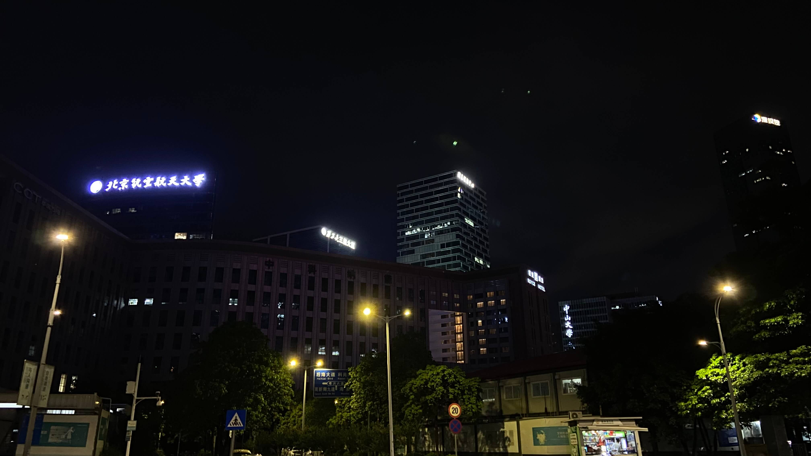
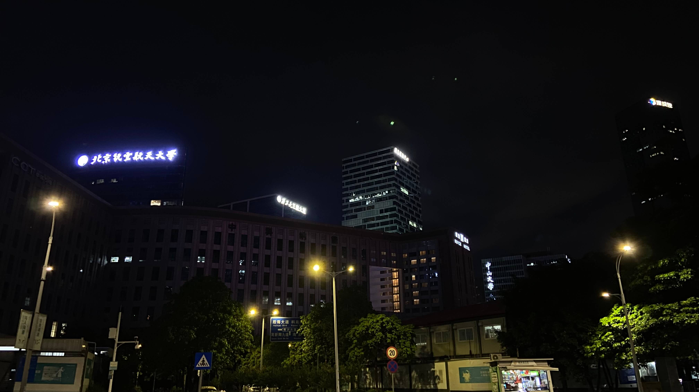

你是什么原因，选择报名一所学校的夏令营？
中科院的数字所位于深圳市南山区，不过我从没有听说过它的事迹。这件事情起源于一次误会，一个偶然的相遇，一个完美的邂逅，一份美好的回忆。
6 月 12 号，我在计算机保研交流绿群里观望着一群佬在水群，无意间有人提及“来神仙院免费请吃大餐”，这是我第一次认识到深圳先进研究院。说实话，我报名中科院数字所就是为了白嫖一顿大餐，所以在系统中我的申请理由是“中科院学术氛围浓厚，师资力量强大，而且入营了还请吃大餐，我要冲”。是的，就是这么荒诞滑稽。
填报数字所，莫辜负大餐
中科院报名系统里要求填意向导师，所以我仔细了解了数字所的情况，应了我的那句话，的确是师资力量强大，我觉得可以对标中上流 985 水平。通过更多的了解，发现数字所就业去向一般都是内推到深圳本地企业，都是很好的公司，并且学生读研读博补助也是相当可观。硕士月补助平均在 3500+，博士在 6000+，还有些餐补、节假日红包，不仅可以养活自己，而且还能经营爱情。
不过也有负面消息，像有些组不放实习，有些组特别卷压榨学生严重。总之，研究所性质，也算对得起这个补助价钱。
数字所包含八个子部门：多媒体集成技术研究中心、云计算技术研究中心、高性能计算技术研究中心、空间信息研究中心、生物医学信息技术研究中心、工程与科学计算研究室、异构智能计算体系结构与系统研究中心、高性能数据挖掘重点实验室。后面听宣讲，基本每个部门都是 2 亿以上的资金。
目光游走许久，最终落在高性能计算所的一位年轻且面相很好的老师。emmm，我还是面相看人，如果在完全不了解一个人的情况下。
套磁中科院老师😀回复得好简短哈 : )
7 月 6 日，西安交通大学计算机系的大数据工程老师给我打来电话，通话结束后，我隐隐约约觉得没戏，更雪上加霜的是，我申请的 20 所夏令营基本全寄了。况且，数字所夏令营系统里申请理由填得那么搞笑，又听绿群和神仙院群里说是强 committee，所以忐忑之后，内心极为平静，更确切地说，心已死。Orzzz...
7 月 7 日，我又复活啦！(●'◡'●)
中科院给我发来入营邮件，我严重怀疑是我填写的意向导师捞了我。
邮件的文风是正式且可爱的，一位女老师抄送给所有营员，共 48 个人，无意间我看见了 @pku.edu.cn 后缀，好奇心的驱使下，我把所有营员都浏览一遍，还有 @tongji.edu.cn 和 @ustc.edu.cn，很多 985 同学入了营，压力一下就到我头上了。
身边怎么全是佬，为什么把我个菜鸟给放进来了 (⊙﹏⊙)
7 月 10 日，中科院自动化所给我发来邮件，庆祝我未能入营。11 号搜集数字所的各方信息，打磨文书。12 号我再次联系数字所意向导师，向他索要微信联系方式，13 号我俩加了微信。14 号带着妹妹绕着家旁边的河道耍疯。15 号上午 10:14 和妈妈道别，踏上深圳北站的列车。
在家的十天，身体上放松，精神上紧绷，一切都源于对未知的不定，害怕“夏零营”，害怕预推免更困难，害怕保不上研，害怕什么都不会就投身工作。妈妈喜欢听我说，不过她对我的焦虑不在乎，她总喜欢说，大不了去本校学电脑，就算工作，也给我留了两套房，儿子还怕什么。我苦笑着，妈妈挠着我的头。
14 号黄昏，我带妹妹回到家，发现有人加我 QQ 好友，一个中南大学的，名字咋一看以为是女生。交流了一下，他和我一样，计算数学专业，他看见我在神仙院群里问有没有伙伴打羽毛球，因此想和我玩。我连忙跟他解释道，我只是想看打羽毛球，我不会打，我把他逗笑了。他姓胡，ESTJ 人格，我俩聊了好久。
15 号清晨，我问他，是不是一个人单住，要不要和我住，一起好有个照顾。大概上午八点半，他回复我同意了，让我先抵达酒店办理标间入住。下午 17:30 左右，抵达深圳北站，做赤湾方向的地铁到了西丽大学城璟峯酒店。
中科院数字所安排的酒店太奢华
我出示身份证，并对前台说是中科院夏令营营员，想办理两张床的房间。前台问我要和谁一起住，我说胡。前台两位姐姐立刻异一样的眼光打量我，其中一位慌忙解释道，男女学生营员不能在一起住。我乐了，说胡他不是女生，虽然胡的名字不像男生，这才消除了尴尬。,,ԾㅂԾ,,
我被安置在 31 层，这几天的早餐去顶楼 37 层，出示房卡即可就餐。房间很精致，但不大，洗手间别具容膝易安之意，有点像香港那边店宿，毕竟深圳也是寸土寸金。窗外是一座小山，我猜叫南山？
数字所营员大礼包
我告诉胡房间号，然后打电话给前台，说房间怎么没有椅子，能不能把我拿一个塑料凳过来。过了会儿，保洁带着凳子敲门，开门后她想探脑袋，我挡着她，说阿姨好，再帮我拿两瓶矿泉水呗。阿姨笑着，就没想着要进来了。
我问胡晚上要不要一起出去吃，他说晚上 19:30 到深圳北站，大约 20:00 到酒店，让我先吃，我说等他，还有小面包垫饥。之后，我在修改面试幻灯片，以及润色一分钟的英文个人介绍。
数字所招生工作负责人是晓琪老师，她人美心善，年轻活泼，从通知营员入营，到送走我们离开，她一直在关心我们，夏令营的每个环节都好认真负责，让大家感受到中科院的人文关怀。之所以突兀地提及她，是因为（我想插叙一下，hhh）。后面，我和晓琪老师她还有交集。
数字所晓琪老师关心营员住宿情况
不久后，胡到了酒店，他敲门进来，我把他行李箱推到靠窗处。他在湖南长沙上学，个子不高，比我魁梧，有一种短小精悍之美。我递给他剃须刀，让他修剪边幅，他刮完胡子，我们便出去觅食。
璟峯酒店出门右后转，有一个好像叫“平安街”的牌坊，里面是美食小吃购物一条街，很热闹。他无辣不欢，我不喜欢吃辣，我俩就找了一个热干面馆吃了起来，都点了最便宜的面，十元那种。他说头一回来深圳，还有一些高中同学在哈尔滨工业大学深圳校区，明后天有时间找他们玩，我说也是头一回来，但我就没有亲朋好友在深圳这儿。
饭后，我们又退回到璟峯酒店附近，去了一个大商场，就是上文那张吊车图片中流光溢彩的地方。或许两个刚熟悉不久的男生逛超市总感觉怪怪的，胡问我，平时喜欢和女朋友逛吗，我尬笑着说没对象，反问他身材这么好，找到对象了嘛，他也尬笑着说没有。我俩走到第三层一个游戏乐园的老虎机旁，胡说没啥好玩的，回去吧。我也同意，可能彼此还没那么熟，总感觉有点儿别扭。
回到酒店，他先洗澡，然后我洗澡，都搞完后，我俩盘膝坐在各自床上，彼此试探。他报了工程与科学计算研究室陈老师，我报了高性能计算技术研究中心魏老师。他本科培养方案更侧重数学，我本科培养方案更偏向于广度。他说现在正在完成学校安排的实习，所以请假过来参加中科院夏令营，此前还参加了中南大学本校的夏令营，他说自己是保研边缘人，排名 8/74，中科院保不上就回本校，找之前带自己发论文的老师读计算数学博士生。从他口里，我才发现填写的意向导师原来是高性能计算部门的主任，我猜错了，这个猜测后文会具体说。我和胡聊到 23:30 左右，便熄灯睡着了。
7 月 16 号，早晨五点出头，胡就早早就醒来，我是七点起床。洗漱后一起去顶楼吃了早餐，很丰盛。早餐后，我换上藏蓝色 POLO 衫营服，我俩便出门乘数字所安排的车前往学校。听了一夜的雨，大雨洗净天空，世界焕然一新，初见深圳先进技术研究院就觉得超级干净。
领队志愿者学长带我们上楼梯，再做客梯，去指定的大教室就坐，进行开幕式。有趣的是，神仙院的保洁不仅有我们正常看到的阿姨大叔，而且居然还有空姐？！我在去洗手间的路上，发现标准的上身制服，下身黑丝，脖子系着红色围巾的空姐，各个身材高挑，面容姣好。胡不禁赞叹神仙院真有钱。
不远处的深圳大学和开幕宣讲
整个上午，全是领导老师宣讲介绍，工作人员拍摄，还有我们营员合照。信息量密集的宣讲，我只对两件事有印象。
第一，某个领导提到先进院收到 3000 份夏令营申请，最后筛选留下 300 人，数字所有 800 人申请，最后放进来 48 人，数字所招收 18 名左右学生，发 25 份左右优营，有候补且优营具有绝对效力。而且听晓琪老师和她的几个同事说，今年大概率没有预推免，就通过夏令营招生。
第二，应该是董超老师，他给 300 营员讲了“一堂课”，关于人工智能的今世前身。难得一见，很少能有老师像他那样讲得特别好，逻辑清晰，娓娓道来。尤其是他讲“什么是人工智能，我们父母不知道无所谓，但我们师生倘若不知道，那 AI 的方向究竟由谁引领”令我特别感触。此后董老师给 AI 下了四个定义，我觉得如果面试被问到，我可以原封不动地回答。
- AI is the algorithm to solve complicated problems.
- AI needs to realize complex objectives.
- AI has the ability of learning from big data.
- AI connects subjective perception and recognition.
晌午，我和胡去五味堂食堂吃饭，中科院是研究所性质，所以研究生工位就近食堂，相当多的学生工位都是敞开的，所以吃饭的时候可以望见他们，不过我更喜欢房间里的工位，因为有隐私感。数字所很阔气，发了四张餐券，夏令营三天的时间里我只用了一张半，即便框框吃。不过，深圳物价好高，两荤一素的龙将猪肘，花了 30 元，要知道在我本科学校附近，也就 18 元。
研究生敞漏的工位
午饭后，我和胡打算在校园里转转，但因为外面天气炎热，加之学生老师都在楼宇里面活动，室外没人，所以不过一会儿胡先到下午宣讲的教室午休，我一个人逛了会，觉得没意思，也去了教室，在胡旁边坐下，迷迷糊糊睡着了。
下午是数字所剩下几个部门宣讲，我其实不是很感兴趣。中途有休息，晓琪老师给师生准备了广式茶歇，主要是一些甜食糕点，还有下午茶、果茶、咖啡。
宣讲结束后，我和胡换了一个食堂吃晚饭，稍后七点，我要和他参加一个神仙院的夏令营活动，地点在 F1 楼羽毛球场，这就是为什么我一开始在群里问有没有朋友打羽毛球，因为我参加了晓琪老师发的“破冰游戏”，在羽毛球场举办，所以我以为是组织营员打羽毛球友谊赛。
快到晚上 6:30 左右，我和胡推开羽毛球场防火门，进去后只看见室内门口旁有一位值班的警务。场馆很大，估计半亩地，左侧四桌台球，中间过道，右侧四块羽毛球地，最右侧过道。我俩坐下等着，闲聊。
不知道从什么时候开始，数字所营员群里有人说肚子疼，临时退出今晚的“破冰游戏”，然后接二连三，又有不少人说要做面试 PPT 退出“破冰游戏”。本身我估计数字所 48 个营员报名的人就不多，结果群里差不多快 30 人都请假。事实证明，活动结束后回酒店的客车上只有 6 个人，还包括司机大叔。
场馆里人越来越多，数字所退出的人也越来越多，胡对我说要么回酒店算了，把时间利用起来做面试 PPT。我意思不差这点时间，玩一玩放松吧，说不定胡能艳遇。他留下来了。这是神仙院组织的活动，除了数字所报名的同学，还有生物医工所、医药所、碳中和所等等，最终场馆差不多有一百人。
一共有五个活动，第一个是自由组队并设计队伍 logo 和口号语，第二个是跟学姐一起跳舞，第三个是旋转木棍不能倒，第四个是躲皮球，第五个是合力拉绳子叠方块。
第一个活动，我本来想和胡组队，但由于我两身高差太大，我在后排，他在前排，主持人要求站方阵，所以没和他成为一队。相反，胡认为了新朋友杨，我也认识了石、毛、刘、王四个朋友，还有一位朋友后期因事退出。
用身体设计队伍 logo 很波折，先后尝试五角星、六芒星等一些图案，虽然我们队伍心灵，但奈何不手巧，摆不出造型，遂放弃，最后摆出一个“7”阿拉伯数字造型，因为我们是第七队。口号就叫“七七四十九，九九归一，必拿第一”。
队伍身体 logo 造型与口号
和学姐跳酷酷的舞步
旋转木棍不能倒
躲皮球，被砸中者淘汰，接中球者加分
合力叠积木
旋转木棍不能倒，我们第七队超时，没能拿奖，躲皮球活动，我们一直打到最终决赛，但输了冠军，叠积木我们用时最少，赢了冠军。我们玩得很开心，彼此也互相认识自己。两位姑娘分别来自医工所和医药所，一位山东兄弟来自材料所（印象中是这样），还有一位记不清了。后来夏令营结束，我们队长去日本玩，活泼开朗的队员她去澳门玩，我时间紧凑，玩不了，就赶往中科大的夏令营。
临近 20:30，胡喊我赶紧走，最后一趟回酒店的班车稍后就要发车。于是我和队员道别，祝他们好运，拿下神仙院的 offer，随后队长建了微信群，队员全入了群改了备注，我便与诸君挥手再见，就不参加领奖环节。
胡交了新朋友，杨，四川大学计算机系，我喜欢称他“川✌爷”，他给人一种成熟稳重大气的魄力。他俩在羽毛球馆门口向我招手催我走。我们仨出了校门上了大巴车，车灯没开，系上安全带，坐在一块聊了起来。川爷很强，听他说已经有复旦大学智能医学、中科院华大专项和浙江大学海宁校区的国际联合方向 offer，不过他说方向不是很喜欢，想预推免冲清北（深）看看。
我至今一份 offer 尽无，多少很是羡慕川爷。不久车上又上来两位同学，但他俩互不认识。看来今晚数字所也就我们五个人参加了“破冰”游戏。司机大叔发车，在城市里弯弯转转，我和胡、杨聊一路，大巴车停在璟峯酒店。
杨住在我们 31 层楼下，晚上胡先洗澡，然后我洗澡。我们依然盘坐在床，他给我讲了偏微分方程的内容，有限元网格，然后带我回忆常微分方程迭代求解法，我也跟他讲了矩阵分析的盖尔圆酉空间厄米特矩阵特征根，以及密码学的 MD5 和椭圆曲线。不过说实话，胡尤其对微分方程的熟悉程度比我高很多，我的很多数学知识长时间不接触不运用，已经忘得差不多了。
再晚点，胡开始做 PPT，由于我的面试幻灯片早在一个月前就做好了，所以只需要稍微调整下，而胡没做任何准备，晚上 23:30 我就睡了，胡熬夜赶进度，后来他说 1:45 那样才上床。
7 月 17 日，数字所安排上午营员参观实验室、下午导师师兄师姐与营员茶歇交流。
中国科学院
参观服务器集群
师姐宣讲高性能中心实验室
中午，我和魏导师约了时间在他办公室见面。他一表人才，和我细致介绍他的研究方向，也详细交代了面试流程，最后提出帮我看面试幻灯片需要改进的地方。指出我的 PPT 风格是列表平铺直叙，面试官希望能看到详略结合，魏老师让我回去给幻灯片加些内容。我也问他一些实习就业的情况，他意思是乐观的，不少毕业生对接深圳本土计算机行业就职，平均在 30W+ 年薪。
谈话结束后，我和胡去食堂吃中饭，稍后不知道什么原因，我俩暂时分开了。我先去了下午的交流中心教室，在 F11 楼，室内没人，所以伏桌午休。
突然教室有人滑椅子，在地板砖上发出呲呲的响声，我被惊醒。手臂边是一瓶酸梅汤，胡在对面看着我睡眼惺忪，饮料是他送的。教室已经来了好几个人，胡在和杨聊天，还有几位女生营员在教室角落处私语。
陆陆续续，教室变得拥堵起来，人挺多，但很安静，没人大声说话，符合搞计算机的理工男理工女形象——社恐。导师们是最后登场，大家都落座在一间狭小的房间，面面相觑。随后晓琪老师也来了，让志愿者准备糕点茶歇，交代完她去了楼下。
我们的另一个夏令营负责人，她觉得场面尴尬得很，于是建议导师和师兄师姐把自己姓名写在便签上，再贴在胸口，然后鼓励营员跟各自部门的师长交流。胡看到他本科的直系学姐也在场，靠近了过去，她旁边还有个同济姐营员。杨也找实验室的师兄师姐聊天。我独自坐了一会，就手把酸梅汤送给一位没营员找聊天的中年老师，然后随便找了一个组混进去和他们一起聊天。
一位胖学长、一位高个子学长，还有两个营员。原来他们全是高性能计算中心的，营员问问题，学长向他俩解答。慢慢地，我发现高个子学长说话的风格很像 QQ 群里的一个人，我问胖学长，群里那个头像是红月亮并说请吃饭的是谁。结果不出我所料，高个子学长几次确认后说就是他自己。
当初也就是因为群里有学长说报高性能中心请吃饭，原来他人就在我眼前。高个子学长问我意向导师填的是谁，我说魏，他调侃没填他导师张。我表达看面相随便填的，没猜中张导，很遗憾。我们几位聊了会，主要围绕导师人品，胖学长的导师是魏。
高个子学长说，夏令营主要是导师组面试，最终正式开学可以不选择意向导师课题组，于是带我去他导师张的办公室。张的外貌是很经典的广东人，胖乎乎的脸特别爱笑，他主要和我说了硕士和博士，以及未来就业情况，总体保持乐观。
我一辈子进不去的学校，不过没什么羡慕之意，挺奇怪的
黄昏，我和胡、杨一起吃晚饭，我点了 55 元的饭菜，胡点了 80 元，杨好像也是 50 多元，犒劳自己。饭后，我们三扫了共享单车，消消食，往酒店方向骑。路过清华大学，仨齐刷刷地掏出手机并排拍照，清深门楼建筑很大气。
由于今晚 20:00 要交面试幻灯片给晓琪老师，所以我和胡回到酒店就立刻修改 PPT，按照魏博意思，我给竞赛项目科研进行突出强调。其实蛮后悔的，难怪 17 号晚上数字所一堆营员请假“破冰”游戏，几乎全去改 PPT 了。胡大概 19:00 改完先邮件提交，而我一直改到 19:45 才交了过去。晓琪老师在群里点我，我是最后一位交 PPT 的，有点尴尬。
交上 PPT，我长舒一口气，洗了澡，开始撰写面试讲稿（面试是脱稿，这只是在心里有个演讲的大概）。差不多到 21:30，我和胡轮流进行演讲，一个人说，另一个人听并提问。面试要求 1 分钟英语自我介绍，然后 4 分钟幻灯片陈述，最后 5 分钟专家组提问。下面这段英文是我最终修修改改定下来的介绍，控制在 1 分 5 秒。
| My dear committee professors, I am Zolio Marling. I majored in computational mathematics in my undergraduate degree. Now I have determined to change my major to computer science, high performance calculating. After three years of exploration, I have firmly decided on this research direction. I have obtained the postgraduate qualification, and I have always been longing for the digital department of SIAT, especially computer technology theory, artificial intelligence, computer vision and data analysis. SIAT has first-class research level, strong faculty and friendly academic atmosphere. And I believe that my mathematics knowledge can also play a greater advantage in the postgraduate stage. That's all. Thank you for listening. |
幻灯片介绍环节起初我严重超时，10 分 40 秒，因此我决定删除一些过于详细的内容页，但由于我已经提交 PPT 给晓琪老师了，不能重复提交，所以我拷贝到 U 盘，打算现场面试的时候粘贴到投影仪设备上。最终和胡几轮测试，控制在 3 分 45 秒。
胡的 PPT 侧重于他前段时间跟本科导师发的计算数学 JCR 一区二作期刊，所以有两面密密麻麻的偏微分数学公式截图，给我的感觉是我一个数学生看不懂。胡觉得有道理，他和我说，自己看起来也吃力，怕到时候讲不清楚，但没有额外的 U 盘，又不想用我的 U 盘，所以他不打算再修改 PPT，打算到时候简化一下，讲得一笔带过。他差不多控制在 1 分整的英语介绍加 4 分 15 秒陈述。
再后来，胡喊杨来我们房间，一起面试测试。杨的口头英语极其流利快速，令我俩一致觉得他一分钟内讲了超级多的内容。杨的幻灯片内容很多，但他也以极快的语速控制在 4 分钟，他主要围绕 2023 ~ 2024 一年间发表的四篇 SCI 蛋白质医疗方向论文展开，给我的感觉就是很牛且很会说，我和胡认为拿下数字所 offer 铁定没问题。
大约 22:30，大家都模拟面试得差不多了，我们仨就坐在床上闲聊，吐槽着大环境就业艰难，很开心很快乐，聊到夜深。
7 月 18 号，深圳早晨下了大雨，地面积水潮湿。晓琪老师 17 日就把面试顺序发到群里，除了极个别营员要求提前面试提前走，对他们调换位置。一共两个组，我是 A 组，胡和杨是 B 组，我的组 24 人，我靠前，他们组也 24 人，杨靠中间，胡靠后。面试时间是 13:30 ~ 18:00，今天数字所不安排大巴车接送。
早上，胡收到一个好消息，他的那篇一区计算数学文章录用，我替他感到高兴。不过他真是大起大落，上午他又收到一个坏消息，他中南大学本校夏令营居然没拿到优营，甚至他排名后十位以及没有保研资格的同学都拿到了优营，他本科导师也觉得诧异。胡本校报的是计算数学直博，而且他和我一样目前是“夏零营”，数字所是他最后一个夏令营，所以他对中科院这边导师（本科导师推荐胡申请数字所这位导师）诚惶诚恐，加之同济姐和他是竞争对手，前文提及数字所 985 巨多，胡立刻高兴不起来了，压力巨大，向我寻求答案。然而，我也迷，只能安慰他“哥们也夏零营现在”。
我和胡在酒店又演练几次面试，然后一起吃中饭，一家饺子馆，后来漫天骤雨，等雨小，回酒店。
吃完饺子天下暴雨，幸好里酒店近
估摸着一个营员面试 10 分钟，所以 13:15 我从璟峯酒店坐地铁出发，带着行李包，借舍友王的小包，西北工业大学夏令营朋友冯把我提的那个包。我把白色的运动鞋用塑料袋裹着塞进包里，脚上穿着拖鞋。下了地铁，走一段路到中科院，尾随一个学生通过门禁混了进去。外面雨下大了，越下越大。
我在 F10 楼等候室，过去的时候雨最大，志愿者学长让我登记签字，还剩两位营员就到我，时间差不多刚好。不过我是一个有点随天气的人，雨天让我觉得脑袋瓜进水，昏沉沉的。
志愿者喊我到面试间门口等候上一个营员出来，就可以进去。我做了最后一次演练，一位女营员出来了，我敲门，便进去。类似圆桌会议，大概十几个老师，但我的魏老师不在场，最前方是演讲台，投影仪打开着我的 PPT 首页。除了晓琪行政老师微笑，其他专业老师面无表情，雨天有点压抑。
“晓琪老师您好，我昨晚回过头检查幻灯片的时候，发现后面好多页图片格式损坏加载不出来（实际全是假的，忽悠老师啦~）”，我大步走到演讲台。
“我带了最新的幻灯片文件，可以从 U 盘拷到电脑上么？”，我从口袋拿出 U 盘。
晓琪老师笑着说没问题，然后她把 U 盘接到槽口。“先 1 分钟英文自我介绍，再 4 分钟演讲陈述，最后是这些老师提问，桌子中间的 iPad 是时钟计数器，留意下讲话时间”，晓琪老师说。
一分钟的英语介绍，我最一开始卡壳了，脑子一片空，不知道想讲什么。底下所有在座老师都在翻阅我的夏令营申请材料以及简历，大约卡了 2 秒，一位女导师抬头看着我，我才回过神，然后顺利讲完，正好 1 分钟。
“行，那你开始讲 PPT 吧”，一位男老师说。
我先致辞感谢数字所老师，然后介绍我的本科以及专业情况，准备翻第二页的时候，幻灯片卡住了，翻不过去。当时心里一惊，我都把 pdf 压缩到 2MB 磁盘空间，怎么还卡住了，我以为是鼠标光标失焦，于是点击屏幕几次，还是没翻页。
所有老师都盯着我，我捣鼓了五秒后，晓琪老师问怎么了，我说卡住了。晓琪老师正准备上来帮我看看情况，页面滑动过去了，等晓琪坐下后，我心里捏了一把汗。
缓过神，我继续讲，正在讲竞赛经历的时候，幻灯片又莫名地自动放映，连续滑动了几页，我退回去，它又反弹滑回来，我再次退回去，电脑才消停。这么一折腾，导师们又盯着我，我确实心里有点虚慌，最重要的是 iPad 上的时间不会暂停。
当讲科研经历的时候，幻灯片又自动放映，不过这次我立刻与它对抗，翻了回去。科研讲到一半，晓琪老师让我注意时间，印象里好像 3 分 45 秒。现在读者你下载的模板是我科大面试的，当时数字所的 PPT 科研章节后面还有十余页，所以我立刻意识到绝对要超时。
4 分 30 秒，一位男导师说我已经超时了，我意思会加快。4 分 50 秒，另一位男导师说，“同学你把后面页放映下吧，不用讲了”。我说好，便放映最后两页，其实最后两页没有实质性的内容。最后，我向所有老师致辞并道歉。超时一分钟出头。
接下来是导师组提问环节，我觉得回答得很糟。
晓琪老师让其他导师看下 iPad 上时间，于是之前那位问我浮点型的老师说等结果通知，去喊下一位营员。吐槽归吐槽，但说实话，是我基本功不扎实，加之面试严重超时，所以我觉得 offer 没戏。
胡给我发微信，说他和杨在路上了，外面雨又下大了。等候室的营员立刻围上我，问我什么情况问了啥。差不多 15:00 可以能 16:00？反正我记不清，总之，我上了楼去 F11 层等候室，等胡和杨赶过来，等他俩顺利面试，等傍晚一起吃饭，等晚上一起逛深圳。
不是广告，个人网站没必要赚流量，只是觉得她的裙子很好看
心情比较郁闷，雨还在下，倘若科大那边再拿不到优营，真就是“我在，全国大学生保研夏令营中取得了‘夏 0 营’的成就，你也快来试试吧！”。进了 11 楼的等候室，没几个人，全是营员。一位女生，身穿假两件的连衣裙，坐在角落敲电脑，很有气质，热心地跟我打招呼说签到表在桌子上，我以为她是志愿者。
我凑到桌子前看表，确实还是一片 985 的营员，和楼下 A 组面试的营员一样。歇了会，不过多久胡和杨赶来了，连忙询问我战况。胡很焦虑，数字所是他最后的希望，但竞争者都太强，说人均论文。杨安慰胡，让他稳住心态，调侃说自己也焦虑。
有一位营员，突然在等候室说“操，PPT 的中科院字写错了”，他焦躁起来，另一位武汉大学的营员说没事，老师看不见，还有位人大高瓴营员建议他演讲时播放快点。他还是很焦躁，在房间里来回踱步徘徊，我问他，兄弟需不需要 U 盘，他立刻高兴起来，于是借了磁盘去改 PPT 了。
先是胡面试，再是杨面试，接着是那个打招呼的深圳大学女生面试，最后是借我 U 盘的华中科技大学的去面试。穿插中间的还有同济的、哈工大的、人大的、北大的、武大的等等，除了羡慕两字，我一个菜鸡真不知道说什么是好。
他们的面试问题有这些，数学偏多是因为我是数学的，实际上更多是偏计算机的，但我不记得了，当时没立刻做笔记。
- 矩阵奇异值分解
- 舒尔定理
- 有限差分
- 非齐次线性方程组的秩与解
- 中心极限定理
- 大数定理
- 数学期望与方差的定义
- 正态分布函数解析式
- 插入排序的时空复杂度
- 链表倒序
- 红黑树
- K-means 和 KNN 的学习（无）监督性
- 编码器与解码器
- 数据库的事务与锁
胡总体很轻松，他跟我们说，一位老师问他有没有意向导师，他说出陈的名字，于是所有导师都齐看一位年轻老师，那个老师说自己就是陈。接下来，其他老师都不提问，只有胡和陈在交流，挺顺利的。我们一致认为他稳啦稳啦，意向导师就在场。
杨总体很自信，他说导师组对他四篇论文深挖，甚至有老师质疑他一年发四篇是否很水，杨都回答了。杨说有个别细节问题自己答不上来，觉得没发挥好。我认为川爷是谦虚的话，胡也认为他稳啦稳啦。
北大姐好像不是很在意，虽然我也焦虑夏令营，但本质上我也不在意。她本科学习方向是医学，但导师组问了好些无关的问题，侧重计算机，所以她认为自己回答不好。但我们以为，北大姐说笑了。
打招呼的深大姐很是犯愁，问她插入排序时间空间复杂度，她没答上来，又问大数定理，也回答不好。她说自己本科不是 985、211，来中科院这边读研类似“学历寄存器”，所以其实想去一个正常的 985 大学读研，不过数字所待遇确实相当好。我希望她能好运吧，去自己想去的地方做想做的事。
高瓴爷嘻嘻哈哈，很活泼，我觉得他一定没问题。武大爷被问了数据库事务与锁，肯定没问题。华科爷还我 U 盘时，有点扮猪吃老虎，肯定也没问题吧。糟了，这下就我有问题了。
面试结束后，我和胡、杨去五味堂餐厅吃晚饭，他俩点了好多，我没胃口，点得少，花了 20 元还是胡送我的餐券（我第一张券用完了，忘带剩下的三张）。结束后，我让杨先休息会儿，我和胡去 F 楼数字所行政办公室申请高铁票报销。
左图是需要的，右图不需要
胡的申请流程没问题，但我的有问题，我以为是右图的，晓琪老师和我说是左图的，这是学校规定的，所以建议我立刻打出租车去车站打印。我问她办公室什么时候下班，她说 18:30，我看了时间感觉有点仓促，于是跟晓琪说明天我托人带过来吧，现在下班高峰点，跑得累。她说没问题就答应了。
出了办公室，我和胡找杨，碰头后，我跟他俩说先回酒店再休息休息，我去趟高铁站，他俩意思陪我去，我感谢他们，但还是示意他们先回去，总感觉还有事要发生。果然男人的第六感很准，后面确实还有事。
酒店和高铁站是背道的，所以我和胡、杨在地铁线相背位置等车。他们车先到，上了地铁，消失了。我这边人很多，第一趟地铁没挤上去，又等了一趟才挤上去。
深圳地铁下班高峰期
地铁上，“破冰”活动队长石给我发短信（也可能是下午发的，记不清了），说给我留张明信片在神仙院 B 楼大厅牵牛花台底下，然后发了一张图。我没想到本是萍水相逢，他却这么重视，我超级感动，决定取完高铁行程票后立刻回学校拿明信片。
深圳地铁和高铁的人实在太多，回学校的车次也堵，本来中科院离高铁站就不远，可遇到如此多的人，时间便长了，以至于后面胡、杨催我。
晚上的中科院教学楼空荡荡的，有不少楼除了大厅都熄了灯，甚至个别楼大厅都熄了灯。我在 B 楼大厅转悠老长时间，一个个花盆检查，导致保安问我在干啥（巨尴尬，像偷花贼 hhhh）。我说看花，花里有秘密。
保安看着我，在前台的一个花盆找到了明信片，我跟他说拿走啦~
石留下的卡片，祝好运，前程似锦，有缘再见
四周都没人，我寻思找先前交流会的高个子学长，也是最最一开始说报高性能中心请吃大餐的学长，委托他把我的行程票带给晓琪老师。在楼宇间乱转，遇到一伙生物医工的外国人，身穿白大褂防护服，带着防毒面具。真别说，这个时辰应该就我一个数字所营员了吧，大晚上突然看到这些人，男生都有点害怕。
学长让营员带酸奶给他作为吃大餐的信物
我联系高个子学长，问他酸奶战况，值得高兴的是，我帮他突破零。和他见了面，寒暄几句，我把奶递给他，他也从冰箱拿了瓶可口可乐给我，聊了起来。他说昨天下午，我和他导师张聊完走后，导师在他面前夸我。
因为胡、杨在等我出去逛逛，所以差不多聊了十分钟，我和学长道别，临走委托他把行程票第二天带给晓琪老师。他说，老师可能没走，带我去办公室看看，我心想这都 20:00 多了，18:30 她们应该就下班了吧。果真，今天办公室门没锁，所以我把票放在晓琪老师桌上，写上便签。
打电话告知晓琪老师，票放在她办公桌上，说在数字所玩得特别愉快，老师和学长学姐们组织得也特别周到，大家相对友好，也祝她身体健康，顺利分娩。晓琪老师很高兴，说大家都看不出来她才刚怀上宝宝，也祝我夏令营成功，回家安全。
夏令营成功应该是和我无缘了吧，但路上一定要注意安全哦~
我和胡说打出租车回酒店，深圳人太多，路上好堵，中间也遇到点事，耽误好长时间。他说行，他俩在酒店准备一下，等我回来就一起出发，杨说去看腾讯大厦。
深圳是年轻活力的城市，如果我没来过这儿，或许真见不到世面。腾讯双子塔大厦，复道行空，百度，微软，各大学的分校区，坐落遍布。我们仨叹为观止，看到很晚，都觉得累了，才回酒店。
夜幕与清晨的 Tencent 大厦
 

西工大科技大厦和北航、中山
百度和早早就下班的外企 Microsoft（羡慕在这工作）
7 月 19 日凌晨 4:15 我便醒来，胡酣然在睡，打着一点小呼噜，他确实挺累，压力山大，希望他能成功。我动作静悄悄的，洗漱完收拾好行李，轻轻带上了门。
深圳的空气好清新，出发，前往科大。